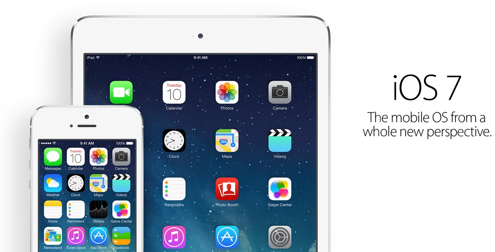
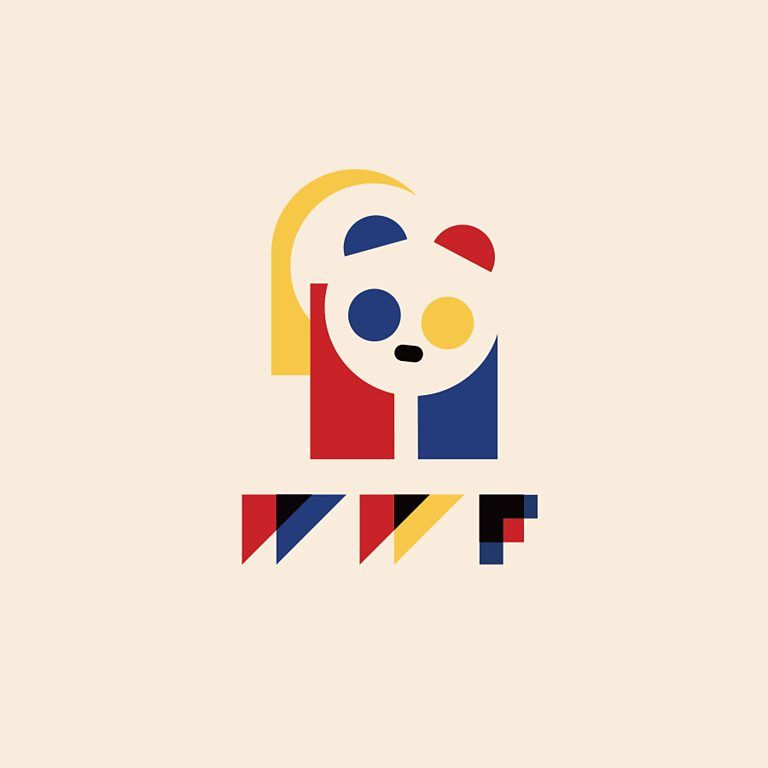
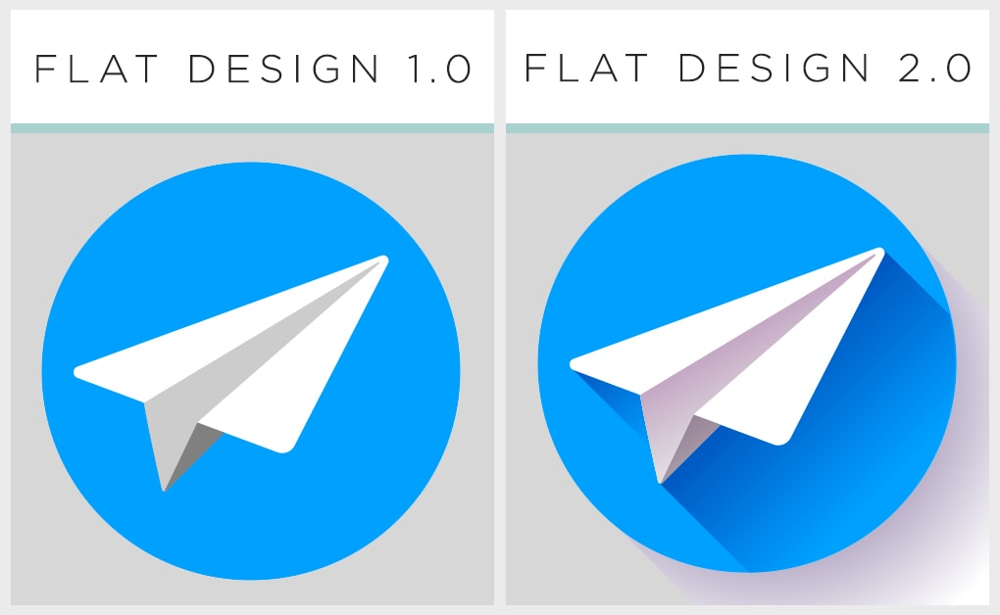
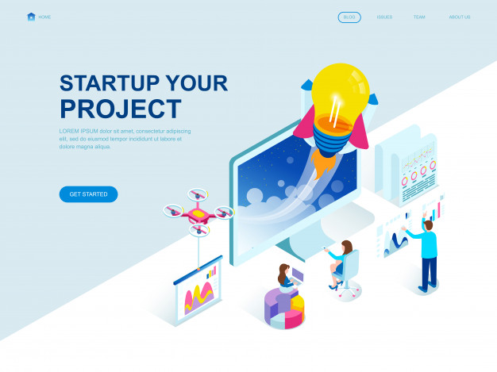
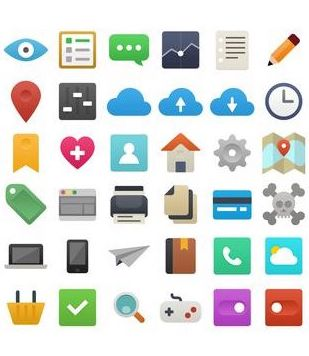
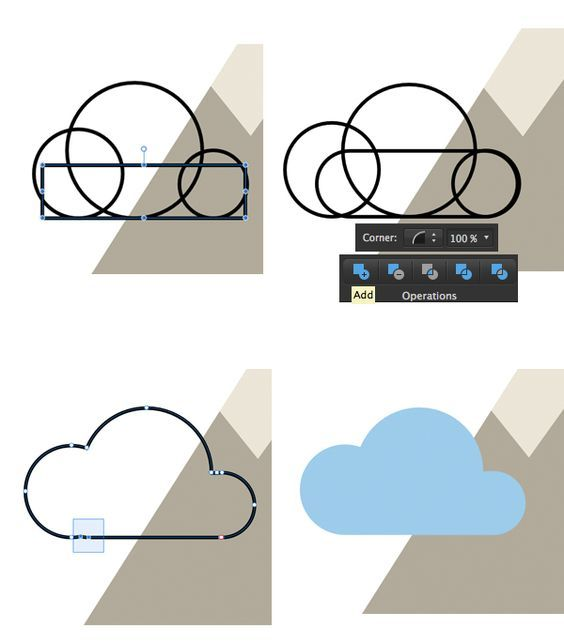

Om Flat Design
Kort om flat design
Flat design er en minimalistisk design-stilart, som oprindeligt er udviklet til digitale løsninger og brugergrænse-flader. Kendetegnet ved stilarten er, at det er designet med enkle, to-dimentionelle elementer, geometriske former samt en klar og lys farvepallette. Flat design blev for alvor kendt i 2013, og det er stadig det grafiske design vi oftest ser og genkender på moderne hjemmesider, apps og andre digitale løsninger.
Et af det vigtige og afgørende egenskaber ved Flat Design, er at det oprindeligt er udviklet til digitale løsninger, og har derfor fra start haft elementer som er tilpasset selve bruger oplevelsen. Designets enkle og minimale struktur, betyder at billederne responderer og loader hurtigt og fejlfrit. Ved at minimere den visuelle støj (som f.eks. tekstur, detaljer og komplicerede animationsteknik), giver flat design brugeren en mere strømlinede og optimal bruger-oplevelse. Derudover har flat designets letgenkendelige ikoner og mindre tekst bevirket, at designet får en lettere og bredere universel kommunikation.

Klassisk flat design med enkle, to dimentionelle elementer, geometriske former samt den klare og lyse farvepalette.
Eksempler
Flat designet opstår

Apples “IOS 7” interface var startskuddet til det vi idag kalder flat design.
Banebrydende brugergrænseflader
De føste elementer fra flat design opstod i 2006, hvor Microsofts lancerede deres ”ill-fated Zune” MP3 afspiller. MP3-afspillerens interface var enkelt opbygget, brugte små bogstaver til simpel typografi og havde et klassisk siluetformet logo design. Dog var først i 2013, da Apple lancerede”IOS 7”, at de første grafiske design-elementer indtraf, som det vi i dag kender som flat design. Iphonens, nu meget karak-tieseret ikon- og displaydesign, var et banebrydende skridt for Flat Design.
Ideen bag IOS 7
Apples chef designer Johnathan Ive udtalte dengang, om processen bag designet af “flat design”-strukturen til IOS 7: “When we sat down last November (to work on iOS 7), we understood that people had already become comfortable with touching glass, they didn’t need physical buttons, they understood the benefits (…) So there was an incredible liberty in not having to reference the physical world so literally. We were trying to create an environment that was less specific.”

Apples chef designer og kreator af “IOS 7”, Johnathan Ive
Indspirende stilarter

Eksempel på en nyfortolkning af Bauhaus design, her ses de geometriske elementer og opbygning, som går igen i Flat design.
Swiss og Bauhaus
Selvom flat design for alvor slog igennem i 2013, trækker det rødder helt tilbage til starten af 1900-tallet, hvor stilarterne Swiss og Bauhaus dominerende. Her sås komponenter som enkelhed i typografien, klare farver og geometriske grundsten, som i den grad er nogle af det elementer som har været inspirationen til flat design.
Videreudvikling af skeomorfisk design
Forgængeren for flat design, er det vi i dag kender som skeomorfisk design. Det skeomorfiske design centreres omkring det virkelige og realistiske grafiske billede. Elementer, såsom skygger, tekstur, farver og gradient, er med til at gøre ikoner og billeder så virkelighedsnære som muligt. Flat design virkede som direkte kontrast og reaktion til det skeomorfiske design, og man forsøgte at gøre grafikken så simpel som muligt, istedet for så detaljeret som muligt.

Forskellen på de to design ses i de to ikoniske interfaces IOS 6 og IOS 7, som gik fra at være skeomofisk design til at være Flat Design.
Flat design 2.0

Flat design 1.0 vs. flat design 2.0, et dybere og visuelt interaktivt design.
Mangel på visuel interaktivitet
Selvom flat designet var yderst populært hos diverse grafiske designere, stødte det på flere vanskeligheder hos brugerne. Manglen på tredimensionelle elementer, så som bla. skygger, tekstur og farvevariationer gjorde det nemlig svært for brugeren at interagere med designet. Knapperne manglede fornemmelsen af den clickbare funktion og adskillelsen fra resten af layoutet.
Ideen bag flat design 2.0
Allerede i 2014 begynder flat designet at udvikle sig, pga. netop disse bruger vanskeligheder. Flat designet bliver til Flat Design 2.0 eller ”næsten fladt design”, og de rene og simple billeder fra det oprindelige design tilføjes farvevariationer og skygger. Designet bliver nu visulet interaktivt. Den grafiske designer Ryan Allen var den første, som satte ord og navn til denne udvikling: “Flat 2.0 is an evolution, not a revolution. Where flat design was a radical departure from the rampant skeuomorphism of days gone by, flat 2.0 is a playful branch off the flat tree.”

Den grafiske designer, Ryan Allen, som i 2014 sætter navn på udviklingen af Flat Design.
Typografi

Typisk eksempel på typografien i Flat Design brugt på et website.
Lige linjer og enkelt layout
I flat design er der også stort fokus på typografien. De simple elementer går igen i typografien, hvor det endelige formål er et let men iøjenfaldende design. Oftest ses maximalt to font-familier, som indfanger brugeren med stærke og udstående farver. Teksten er typisk omringet af ”negative space”, som giver overskuelighed og lethed til teksten. Dog er nøgleelementet i typografien lige linjer og skarpe kanter, som giver en skarp og fokuseret brugeroplevelse.

Et typisk eksempel på en brugervenlig app, som gør brug af minimal tekst, men derimod ikoner til at vejlede brugeren.
Fokus på ordene
Et af nøgleelementerne I flat design, er at det skal være interessant at kigge på, samtidig med at det skal være nemt og forståeligt at læse. Typisk er teksten kort og direkte, og sitet er sjældent oversvømmet med tekst. Al overflødig information og tekstfyld er skåret fra, så brugeren kun læser de vigtigste pointer. Igen er den lette og overskuelige ide i fokus.

Typiske ikoner som bruges I flat designets brugergrænserflader.
Typografiens ikoner
Et andet nøgleelement er brugen af ikoner i stedet for tekst. I mange digitale løsninger ses, at der bruges minimal tekstbrug men derimod ikoner til vejledning af funktionerne. Den moderne brugers hjerne oversætter med lethed ikonerne til funktioner uanset sprog eller forståelse for feltet. Ikonerne guider brugeren til en overskuelig og universiel bruger oplevelse.
Komposition og farver

Lys og klar farvepallette
Flat designets farvpallette er typisk sammensat af lyse og klare farver, som giver udtryk til animationernes positive og ”playfull” visuelle grafik. Dog har billederne typisk en begrænset udvalg er forskellige farver, som hjælper til at samle det enkle og overskuelige udtryk i billederne.
Lys og klar farvepallette
På grund af flat designets udvikling til flat design 2.0, er nuancerne af farvepalletten meget vigtige. Nuancerne giver nemlig animationerne skygge og dermed dybde til de interaktive funktioner. Oftest ses det, at enhver farver har 2-3 varitioner, hvorved grafikken får den todimensionelle effekt.
Designets kompsition
Flat design har typisk en meget enkel design komposition, bestående af få animationer, begrænset tekst samt en ren og simpel baggrund.
Geometrisk grundstryktur
Et af nøglepunkterne i designets komposition, er den geometriske grundstruktur. Enhver animation i flat design er typisk sammensat af cirkler, trekanter, rektankler og firkanter, som til sidst former og danner de bløde og enkle elementer.

Her ses tydeligt hvordan de geometriske elementer til sidst bliver samlet til den endelige animation.
Kilder
Hjemmesider
- https://tubikstudio.com/flat-design-history-benefits-and-practice/
- https://medium.com/@ryanallen_com/flat-design-has-evolved-7f396a541953
- https://en.wikipedia.org/wiki/Flat_design
- https://designmodo.com/flat-design-fonts/
- https://uxdesign.cc/the-evolution-of-visual-design-fbfcd2675cf5
- https://docs.google.com/presentation/d/1fjcEUsfbhKXh1hbBVsJ5vzsTmofBg0-taibCUy2PWK4/edit#slide=id.g6071b54ab6_0_0
- https://99designs.dk/blog/design-history-movements/flat-design-and-semi-flat-design/
Videoer
- https://www.linkedin.com/learning/design-aesthetics-for-the-web/form-moving-beyond-flat-design?u=36836804
- https://www.youtube.com/watch?v=pDFMWXr-v_E